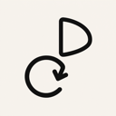
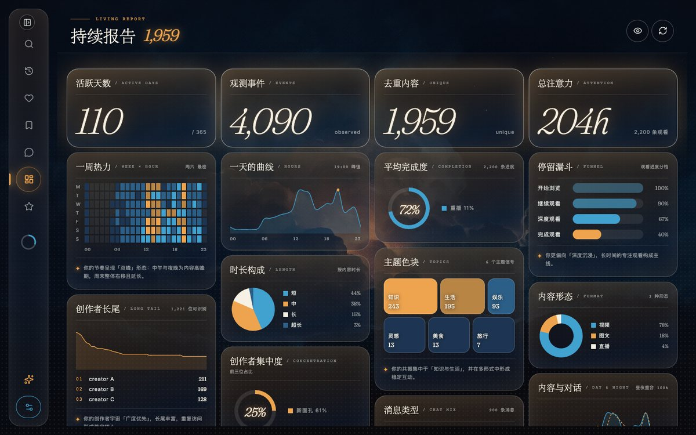

内容数据工作台
把抖音这一年留在自己的电脑上。观看、喜欢、收藏和聊天记录都存在本机，可以离线查看，还能生成年度回顾。
正在查最新版本…
下载慢或打不开就换一条线路：
安装
本机需要装有 Chrome、Edge、Brave 或 Chromium 其中一个，Windows 自带的 Edge 就可以。
macOS：打开 dmg，把「内容数据工作台」拖进「应用程序」。安装包没有开发者签名，第一次打开前先在「终端」里运行下面这行，不然会提示“应用已损坏”：
xattr -cr "/Applications/内容数据工作台.app"
Mac 版没法在应用里自动更新，出新版本时回到这里重新下载，覆盖安装就行，已经采集的数据不会丢。
Windows：运行安装程序。如果弹出 SmartScreen 提示，先点「更多信息」，再点「仍要运行」。以后的新版本可以在应用里直接更新。
核对安装包是否完整（SHA-256）
加速线路由第三方转发。担心文件被改过的话，可以对照下面的校验值：macOS 在终端运行 shasum -a 256 文件名，Windows 在 PowerShell 运行 Get-FileHash 文件名。
暂时拿不到校验值，请到 GitHub 发布页查看。
看看长什么样

交流与反馈

QQ 群 DDDouyin，群号 1124211302
也可以直接加 QQ 940537208